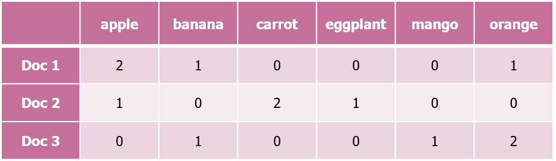
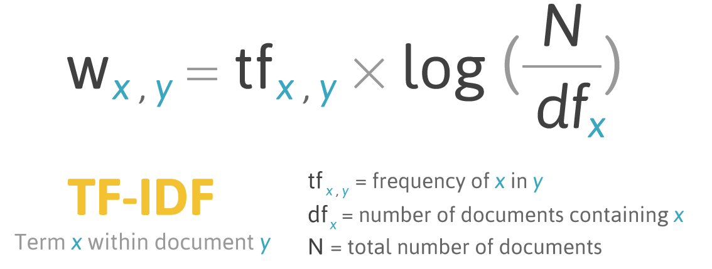

영화 리뷰 감성 분석
Table of contents
감성분석(Sentiment Analysis)이란?
: 특정 주제에 대한 글의 감성/태도를 파악하는 것 (긍정 / 부정)
- ML-based (기계 학습 기반)
- Supervised learning. (training data: 긍정/부정의 label이 있는 text 데이터)
- 단점: 유사한 domain의 학습 데이터를 준비해야 하는데, 긍정-부정이 명확히 드러나 있는 학습 데이터를 만들기가 어렵다.
- Lexicon-based (감성어 사전 기반)
- Lexicon(감성어 사전)에 단어별로 감성 점수가 들어있다 (긍정적인 단어는 + 값, 부정적인 단어는 - 값)
- 사전을 바탕으로 text의 전체적인 감성 점수를 매기고, 값이 0보다 크면 긍정 / 작으면 부정으로 해석
- 단점: 사전을 만드는 것 자체가 어렵고, 사전이 있다고 해도 이걸 문서에 적용해서 정확한 감성점수를 계산하는 게 쉽지만은 않다. (ex. the movie was not fun → fun은 긍정이지만 not fun은 부정)
영화 리뷰 감성 분석: 준비
: Machine Learning 기반 감성 분석을 위해, 긍정/부정이 구분되는 데이터인 영화 평점 & 리뷰 데이터를 수집
# 사용할 library를 먼저 모두 import
import pandas as pd
import numpy as np
import konlpy
from sklearn.feature_extraction.text import CountVectorizer # tf-idf 방식을 사용하려면 대신 TfidfVectorizer를 import
from sklearn.model_selection import train_test_split
from sklearn.linear_model import LogisticRegression
from sklearn.metrics import accuracy_score
영화 평점 - 리뷰 데이터 준비
1. 네이버 영화 ‘현재 상영 영화’ 100개의 평점-리뷰 데이터 수집 (2021.03.30 기준)
## '네이버 영화'에서 직접 수집해 온 데이터를 dataframe으로 정리해 둠
reviews_df.head()
| movie_num | movie_title | star | comment | |
|---|---|---|---|---|
| 0 | 191637 | 고질라 VS. 콩 | 10 | 시리즈 중 최고였던거 같아요;; 극장가서 보길 잘한듯 |
| 1 | 191637 | 고질라 VS. 콩 | 9 | 시원시원하게 두드려 패고 맞는 영화. 종종 봐줘야 마음이 상쾌해진다. |
| 2 | 191637 | 고질라 VS. 콩 | 10 | We need Kong, The world needs him. |
| 3 | 191637 | 고질라 VS. 콩 | 10 | 방사능 왕도마뱀과 인류 조상 격 에이프의 환상적인 좌충우돌 액션 콜라보 |
| 4 | 191637 | 고질라 VS. 콩 | 10 | 콩 점프하고 고질라 수영하고 전투씬 나올때마다 포디로 보니까 ㄹㅇ 존잼임ㅋㅋ 님들아 꼭 나믿고 포디로 보셔라 |
reviews_df.info()
<class 'pandas.core.frame.DataFrame'>
RangeIndex: 170388 entries, 0 to 170387
Data columns (total 4 columns):
# Column Non-Null Count Dtype
--- ------ -------------- -----
0 movie_num 170388 non-null int64
1 movie_title 170388 non-null object
2 star 170388 non-null int64
3 comment 170388 non-null object
dtypes: int64(2), object(2)
2. comment에 내용이 없는 행 파악해서 삭제
- 평점만 있고 연결된 text가 없다면 감성 분석에 사용할 수 없음
# comment에 내용이 없는 행 파악
print(len(reviews_df[reviews_df['comment'] == '']))
# comment에 내용이 없는 행은 지워서 새 df에 저장
reviews_with_comment_df = reviews_df[reviews_df['comment'] != '']
reviews_with_comment_df.reset_index(drop=True, inplace=True)
print(len(reviews_with_comment_df)) # comment가 있는 리뷰의 수
5370
165018
학습용 데이터로 가공
- 평점 8 이상 혹은 3 이하만 저장 (8 이상: 긍정적, 3 이하: 부정적)
- 각 text를 tokenize한 후, 동사, 형용사, 명사만 저장 (konlpy의 Okt 사용)
# 텍스트를 tokenize해서 adjective, verb, noun만 추출하는 함수
def tokenize_korean_text(text):
text_filtered = re.sub('[^,.?!\w\s]','', text)
okt = konlpy.tag.Okt()
Okt_morphs = okt.pos(text_filtered)
words = []
for word, pos in Okt_morphs:
if pos == 'Adjective' or pos == 'Verb' or pos == 'Noun':
words.append(word)
words_str = ' '.join(words)
return words_str
X_texts = []
y = []
for star, comment in zip(reviews_with_comment_df['star'], reviews_with_comment_df['comment']):
if 4 <= star <= 7:
continue
# 평점이 4~7인 영화는 애매하기 때문에 학습데이터로 사용하지 않음
tokenized_comment = tokenize_korean_text(comment) # 위에서 만들었던 함수로 comment 쪼개기
X_texts.append(tokenized_comment)
y.append(1 if star > 7 else -1)
# 평점이 8 이상이면(8,9,10) 값을 1로 지정 (positive)
# 평점이 3 이하이면(1,2,3) 값을 -1로 지정 (negative)
print(f'원래 text 수: {len(reviews_with_comment_df)}')
print(f'평점 3 이하 혹은 8 이상인 text 수: {len(X_texts)}')
print(X_texts[:5])
원래 text 수: 165018
평점 3 이하 혹은 8 이상인 text 수: 149373
['시리즈 중 최고 였던거 같아요 장가 보길 한듯', '시원시원하게 두드려 패 맞는 영화 종종 봐줘야 마음 상쾌해진다', '', '방사 능 왕 도마뱀 인류 조상 격 이프 환상 좌충우돌 액션 콜라보', '콩 점프 고질라 수영 전투씬 나올 때 포디 보 존잼임 님들 꼭 나 믿고 포디 보셔라']
Logistic Regression으로 학습
train_test_split & vector화
# train_test_split
X_train_texts, X_test_texts, y_train, y_test = train_test_split(X_texts, y, test_size=0.2, random_state=0)
# CountVectorizer로 vector화
tf_vectorizer = CountVectorizer(min_df=1, ngram_range=(1,1))
X_train_tf = tf_vectorizer.fit_transform(X_train_texts) # training data에 맞게 fit & training data를 transform
X_test_tf = tf_vectorizer.transform(X_test_texts) # test data를 transform
vocablist = [word for word, number in sorted(tf_vectorizer.vocabulary_.items(), key=lambda x:x[1])] # 단어들을 번호 기준 내림차순으로 저장
*CountVectorizer: 각 단어의 frequency를 기반으로 text를 vector화.
- ngram_range: (1, 1) means only unigrams, (1, 2) means unigrams and bigrams, and (2, 2) means only bigrams. (default: (1,1))
- min_df: ignore terms that have a document frequency strictly lower than the given threshold. (default: 1)
- float 값을 쓰면: document에 어느 정도 비율 아래로 들어 있으면 무시한다는 뜻
- int 값을 쓰면 (ex. 1): 절대적으로 몇 번 아래로 포함된 단어면 무시한다는 뜻 (1이면 1번도 안 나온 단어는 무시한다는 뜻)
-
tf_vectorizer.fit_transform(X_train_texts):- fit: training data에 있는 각 단어별로 번호가 붙어서 저장됨
- transform: training data의 각 값마다, 어떤 단어가 몇 번 나오는지 데이터가 저장됨
– ex)(0, 2442) 1이라고 하면 0번째 변수에 2442번 단어가 1번 나온다는 뜻
-
tf_vectorizer.transform(X_train_texts):- test data의 각 값마다, 어떤 단어가 몇 번 나오는지의 데이터가 저장됨 (단, fit_transform이 아니므로, 앞서 training data에 있던 단어들에 한해서 분석됨)
## 확인해보기
print(X_train_tf[:1], '\n')
print(X_test_tf[:1], '\n')
print(vocablist[:3])
(0, 48016) 1
(0, 30089) 2
(0, 1146) 1
(0, 68104) 1
(0, 57682) 1
(0, 1277) 1
(0, 34835) 1
(0, 51567) 1
(0, 172) 1
(0, 37975) 1
(0, 1485) 1
(0, 15929) 1
(0, 64573) 1
(0, 66001) 1
['가가', '가각', '가감']
+) Text Vectorization: TF와 TF-IDF 방식
- TF (Term Frequency)
- text 내 단어별 frequency를 기반으로 vector를 형성

(+. 위와 같이, 각 문서의 단어를 나타내는 vector들로 만든 행렬을 DTM(Document Term Matrix)이라고 함)
- TF-IDF (Term Frequency - Inverse Document Frequency)
- 특정 단어가 특정 문서의 uniqueness를 얼마나 나타내는가를 계산하기 위해 사용
- TF-IDF가 높을수록 해당 단어는 다른 문서에서는 적게 사용되고, 해당 문서에서 많이 사용되고 있다는 뜻으로, 해당 단어가 해당 문서의 uniqueness를 많이 나타낸다고 볼 수 있음.

(출처: bloter)
학습 & test data 예측
model = LogisticRegression(C=0.1, penalty='l2', random_state=0)
model.fit(X_train_tf, y_train) # 학습
LogisticRegression(C=0.1, class_weight=None, dual=False, fit_intercept=True,
intercept_scaling=1, l1_ratio=None, max_iter=100,
multi_class='auto', n_jobs=None, penalty='l2',
random_state=0, solver='lbfgs', tol=0.0001, verbose=0,
warm_start=False)
→ Test data 예측:
y_test_pred = model.predict(X_test_tf)
print('Misclassified samples: {} out of {}'.format((y_test_pred != y_test).sum(), len(y_test)))
print('Accuracy: {:.2f}'.format(accuracy_score(y_test, y_test_pred))) # model.score(X_test_tf, y_test)로 계산해도 됨
Misclassified samples: 2490 out of 29875
Accuracy: 0.92
- 92%를 잘 예측함!
예측에 중요한 역할을 하는 단어들 확인
coefficients = model.coef_.tolist()
sorted_coefficients = sorted(enumerate(coefficients[0]), key=lambda x:x[1], reverse=True)
# coefficients(계수)가 큰 값부터 내림차순으로 정렬
print('긍정적인 단어 Top 10 (높은 평점과 상관관계가 강한 단어들)')
for word_num, coef in sorted_coefficients[:10]:
print('{0:}({1:.3f})'.format(vocablist[word_num], coef))
print('\n부정적인 단어 Top 10 (낮은 평점과 상관관계가 강한 단어들)')
for word_num, coef in sorted_coefficients[-10:]:
print('{0:}({1:.3f})'.format(vocablist[word_num], coef))
긍정적인 단어 Top 10 (높은 평점과 상관관계가 강한 단어들)
최고(2.163)
여운(1.829)
좋았습니다(1.626)
재밌어요(1.617)
좋았어요(1.524)
재밌었어요(1.456)
재밌게(1.435)
좋아요(1.389)
봤어요(1.330)
최고다(1.317)
부정적인 단어 Top 10 (낮은 평점과 상관관계가 강한 단어들)
재미없다(-1.818)
재미없어요(-1.836)
게이(-1.842)
재미없음(-1.936)
쓰레기(-2.012)
아깝다(-2.045)
미화(-2.196)
똥꼬(-2.597)
노잼(-2.748)
최악(-2.767)
새로운 댓글의 긍정/부정 예측해보기
: 학습에 포함되지 않았던 영화인 ‘인턴‘에서 댓글을 가져와서 테스트
# 긍정/부정 테스트용 함수 생성
def guess_good_or_bad(text):
text_filtered = text.replace('.', '').replace(',','').replace("'","").replace('·', ' ').replace('=','')
okt = konlpy.tag.Okt()
Okt_morphs = okt.pos(text_filtered)
words = []
for word, pos in Okt_morphs:
if pos == 'Adjective' or pos == 'Verb' or pos == 'Noun':
words.append(word)
words_str = ' '.join(words)
new_text_tf = tf_vectorizer.transform([words_str])
if model.predict(new_text_tf) == 1:
print('긍정')
else:
print('부정')
→ 리뷰 3개를 각각 테스트:
guess_good_or_bad('로버트 드니로가 첫출근 전날밤에 (다음날 입을) 옷과 신발을 준비하는 장면이 왜그렇게 가슴찡하던지..왠지 가슴설레고 긴장되고, 가기 싫었던 온갖 감정들이 15년만에 다시 기억이 나더군요 재밌고 따뜻한 영화입니다~')
긍정
guess_good_or_bad('시작하고 몇분간은 재밌을거같았다. 하지만 계속 진행될수록 뭔가 이상함과 뜬금없음과 ㅈ같음을 느꼈다. 난중에 감독이 여자인것을 알고 납득이 가버렸다.')
부정
guess_good_or_bad('울컥... 한 영화...')
긍정